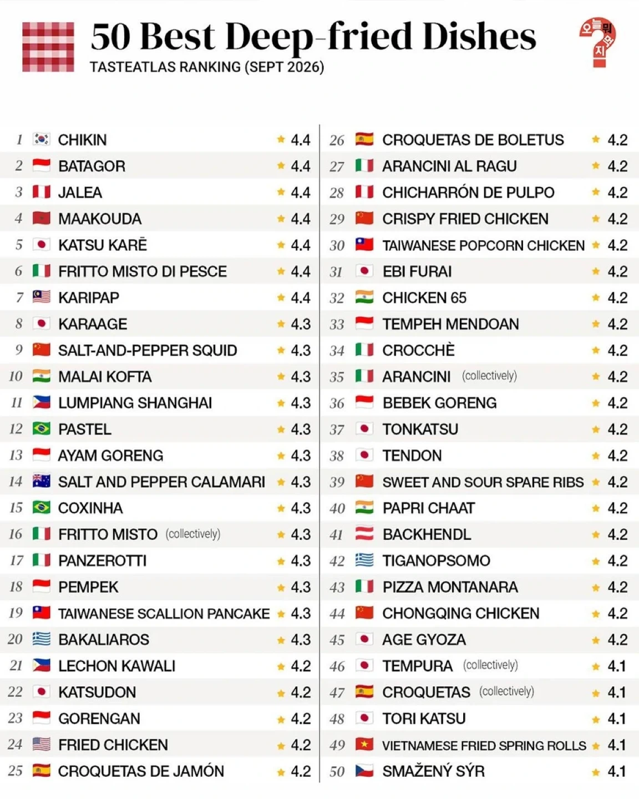
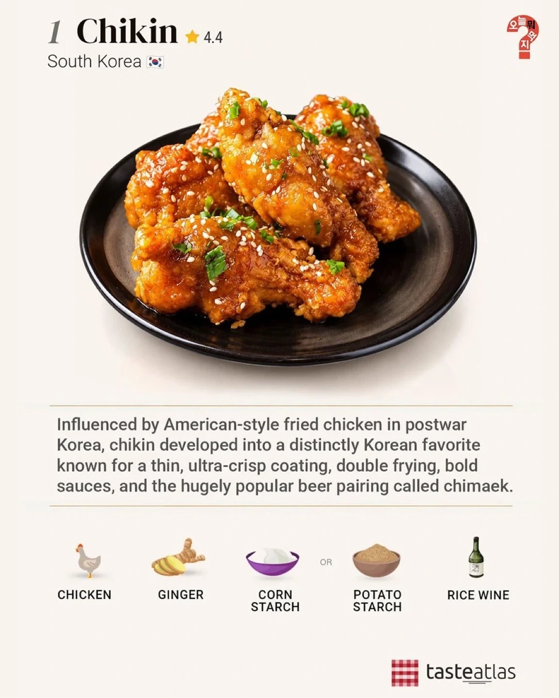

공신력있는 조사인가?
한국인 많은곳에서 조사한거 아녀?
애초에 식당도아니고 특정음식을 순위매기는데 공신력있는 조사가있을수가없음
나시고렝인가? 그게 제일맛있는음식 1위된것도 인도네시아가 인구존나많아서 투표몰빵하느라 그런거고
른당
김구선생님 이젠 즐기고계시죠?
아무리 음식이 상대적이라고 하지만 이건 좀 k버블 많이 낀상태인거같다
국회의원들인가 치킨이 한식이냐고 따지던거 웃겼는데
사진에 후라이드 맛있겠다
저희 주장이 아닙니다...